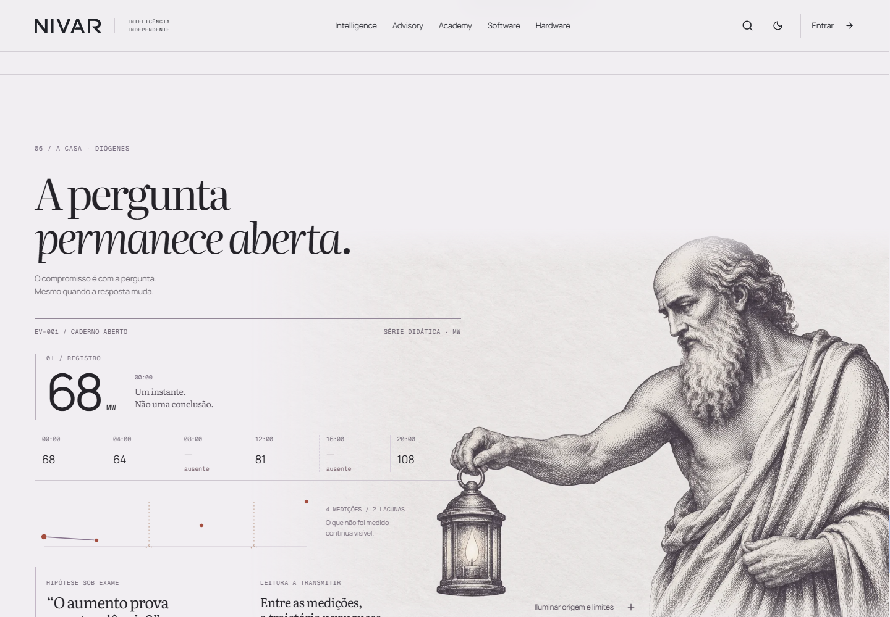
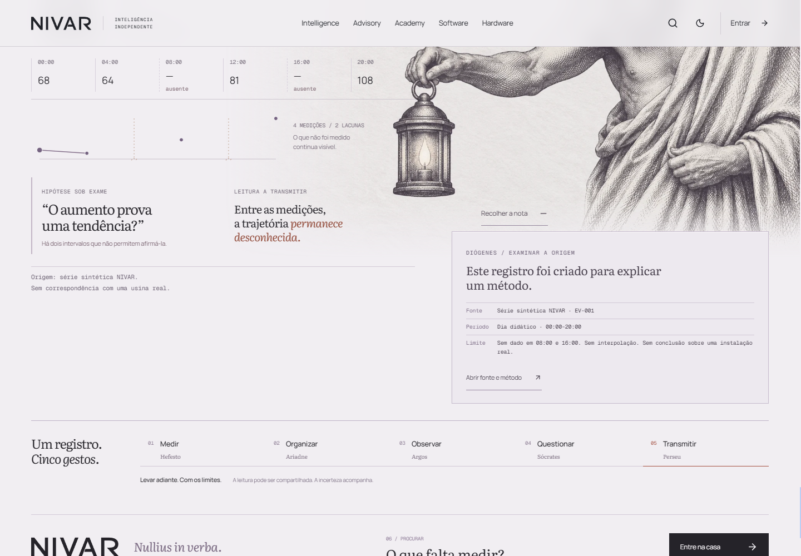
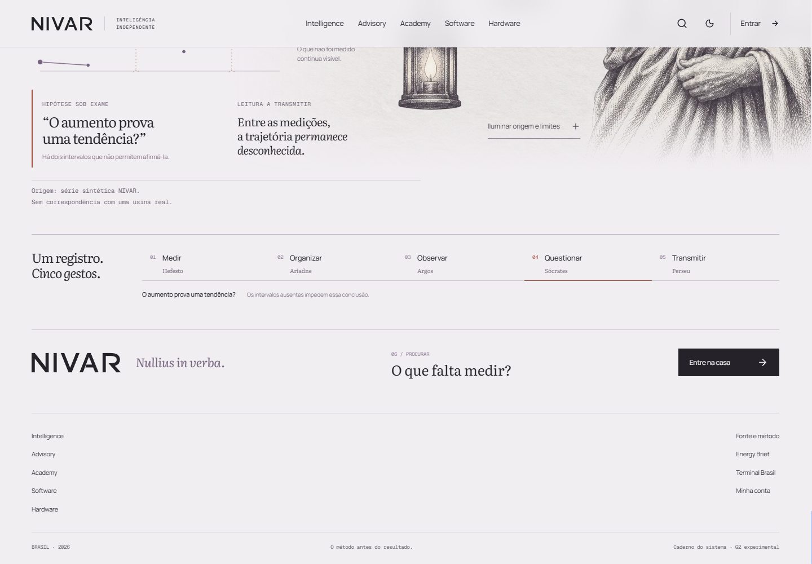
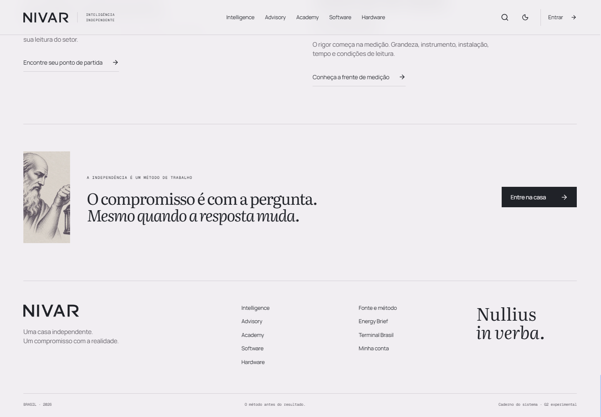
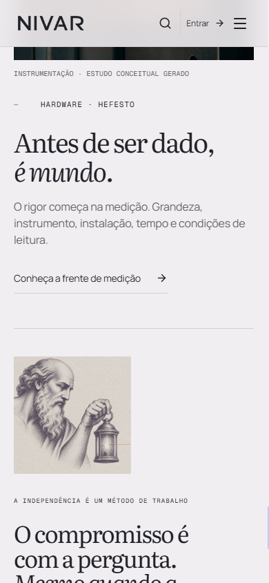

O encerramento,
em movimento.
Capturas do Portal local integrado. Examine primeiro os filmes e as imagens; depois compare o ponto de partida e a referência observada. O pacote não atribui aprovação estética à implementação.
Da última frente à pergunta aberta.
Roda e ponteiro nativos. Captura de frames reais do navegador, com intervalos preservados; cadência de gravação inferior à renderização. Use o Portal para julgar a fluidez em tempo real.
Gesto, evidência, origem, continuação.
{kind=link}

{kind=link}

{kind=link}

{kind=link}
{kind=link}
{kind=link}
O ponto de partida observado.


Podium · um gesto torna-se um objeto dominante.
Captura nativa do fechamento de Podium, incluindo passagem dos serviços e resposta ao ponteiro. Serve para comparar autoridade, escala e continuidade. Sua linguagem e sua mídia não foram incorporadas ao produto NIVAR.
A síntese está realmente presente?
- O último capítulo conduz a um ato final memorável e próprio?
- O gesto de rosto, braço, mão e lanterna se relaciona com o registro em ambas as larguras?
- As cinco famílias trabalham no mesmo registro, ou os rótulos explicam mais do que a experiência mostra?
- A revelação da fonte tem relação causal com Diógenes e torna a investigação mais examinável?
- O final permanece aberto? A composição merece um YES independente, ou qual é o maior motivo visível para NO?
Na página real, teste também teclado, movimento reduzido e a nota expandida. Os dados são explicitamente sintéticos e didáticos: 68, 64, ausente, 81, ausente, 108 MW. Não representam uma usina real.